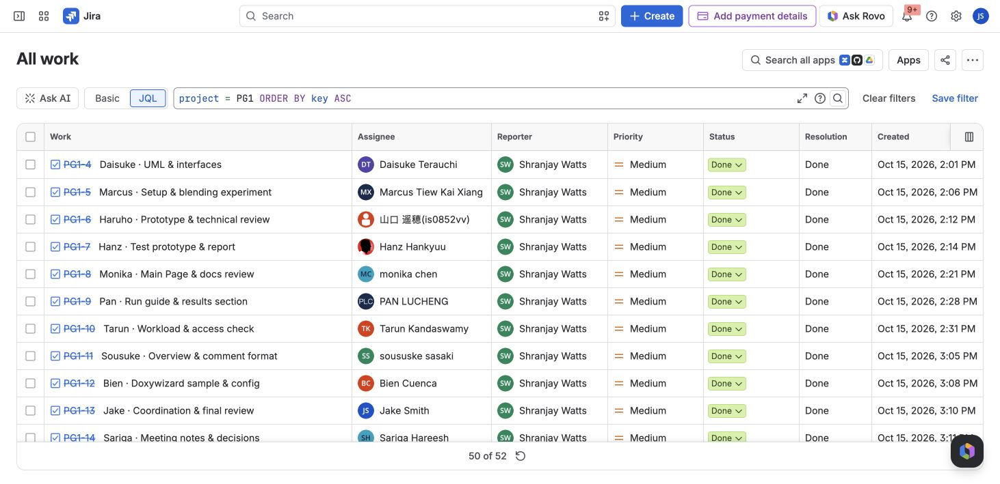
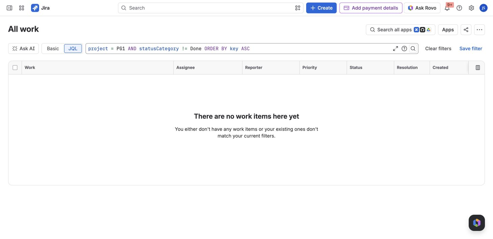
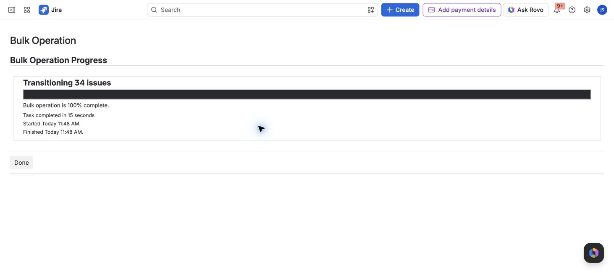
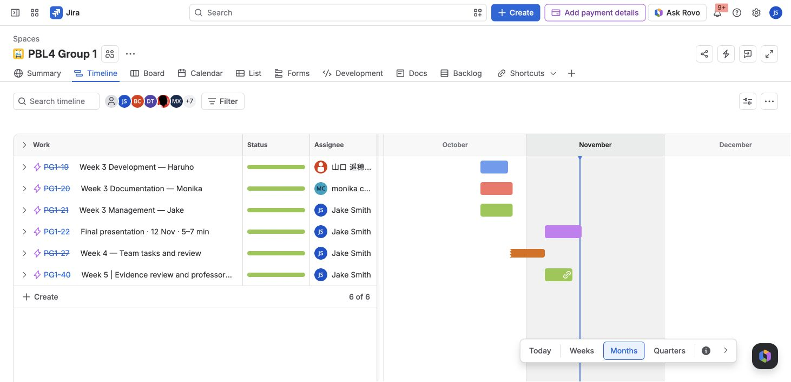
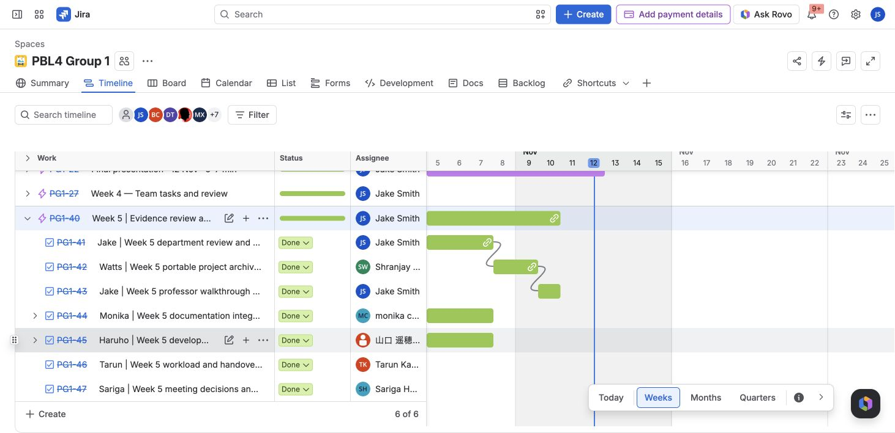
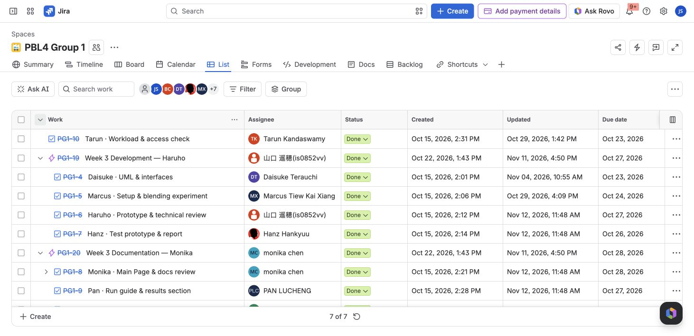
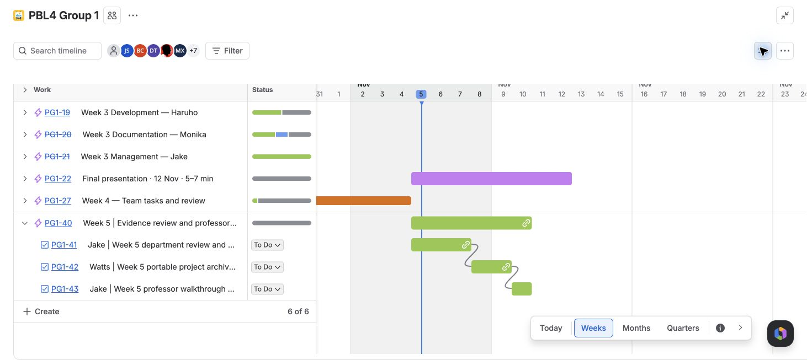

Jira screenshots
Captured from the live PG1 Jira project on 12 November 2026, after final closeout. These images are stored in GitHub and require no Jira login. Final register: 52 / 52 Done · Closeout details
Final ticket register
Visible task rows show Done. The “50 of 52” footer is Jira's page-size limit; the export includes all 52 tickets.

No open tickets
The query checks every PG1 ticket whose status category is not Done. It returns no work items.

Closeout completed
Jira completed the transition of 34 remaining tickets. Eighteen tickets were already Done before this operation.

Schedule overview and shared table
Captured 12 November 2026 during the professor review cleanup. Gantt bars retain the original planned dates; green indicators and Done labels show the tracker state at capture time, not completion on the bar end dates.


The shared List view keeps owners, status and original audit dates visible. Expand parent rows for the tasks underneath. The footer counts top-level rows when hierarchy is enabled; the export contains all 52 tickets.

Historical Week 5 dependencies
The following 5 November 2026 screenshot preserves the earlier handoff/dependency planning view; it is not the final status view.
